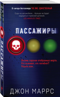

Аннотация
Вы едете в своей полностью автоматической машине. Внезапно двери и окна блокируются, маршрут меняется, и все функции автомобиля выходят из-под вашего контроля. А затем совершенно незнакомый вам голос сообщает через интерком: «Совсем скоро вы умрете»…
Восемь автомобилей на встречных курсах.
Восемь заранее отобранных жертв.
Кто выживет, кто погибнет?
Решать вам…
Загадочный хакер взломал системы управления восьми самоуправляемых машин, с недавних пор ставших нормой для всех жителей Великобритании. Теперь он угрожает их пассажирам смертью. Среди его заложников — угасающая телезвезда; нелегальный иммигрант; молодая беременная женщина; муж и жена, едущие раздельно; ветеран военного конфликта; желающий покончить с собой мужчина; жена, сбегающая от своего тирана-мужа. Встроенные камеры транслируют их панику миллионам зрителей по всему миру. И теперь эти миллионы должны принять чью-то сторону. Потому что хакер уже открыл голосование: «Кто из них выживет в конце? И кто умрет первым?»
Об авторе
Джон Маррс - английский писатель и журналист.
Окончив школу с отличными оценками, в 18 лет Маррс начал работать журналистом в газете The Chronicle & Echo, где вел музыкальную колонку, считая возможность посещать концерты отличным развлечением. Затем в биографии Джона появилось сотрудничество со столичным журналом News of the World. С 2009 года Маррс работал в качестве фрилансера с национальной прессой, особенно хорошо журналисту удавались интервью со звездами мира телевидения, кино и музыки. Джон всегда был заядлым читателем романов. Чтобы скрасить время в электричке по дороге на работу (поездка в Лондон занимала по 1,5 часа), Маррс начал писать сам. Джон включал музыку в наушниках и игнорировал окружающий мир, создавая собственный. В поездах и на обеденных перерывах созданы 5 первых книг писателя. Написанный в возрасте 43 лет дебютный роман Маррса «When You Disappeared » рассказывает о боли и обидах, нанесенных родителями. Но рукопись отвергли 80 литературных агентов и издателей, и Маррс в надежде найти книге хотя бы 100 читателей решил продавать труд онлайн. Автор безнадежно пробовал все возможности продвижения: посты в «Фейсбуке» и «Твиттере», создание промовидео, одержимо проверял статистику продаж и рейтингов, переживал из-за негативных оценок. Лишь через 2 года на Маррса вышло издательство Thomas&Mercer, и в 2013 году произведение, уже под новым названием «Когда ты исчез» (When You Disappeared), было напечатано. Самым известным произведением автора стал триллер «The One. Eдинственный». В декабре 2015 года писатель готовился к свадьбе и однажды в лондонском метро задумался, насколько бы проще была жизнь, если бы у каждого человека существовала созданная для него или нее половинка. Но как тогда ее найти в огромном мире? Домой автор вернулся с готовой канвой романа, набранной на телефоне. Каждый день Маррс печатал по 2000 слов и подготовил черновик за 4 месяца. Изначально публикацию писатель также произвел онлайн и уже позже подписал контракт на выпуск с издательством Penguin, где «The One. Eдинственный» вышел в 2017 году. «Единственный» — это психологический триллер, рассказывающий о подборе пары по ДНК-тесту. При этом роман очевидно играет с поговоркой «любовь слепа», а в описании окружающего мира чувствуются нотки Джорджа Оруэлла. После публикации пятого романа, полицейского триллера «Her Last Move», автор смог покончить с журналистикой и сделать написание книг своей основной профессией. Книги Джона Маррса переведены на двадцать языков мира.
Другие книги автора:
- Тьма между нами
- The One. Единственный
- Когда ты исчез
- Добрая самаритянка
- Code. Носители
- Последняя жертва